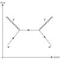

annihilation

Definition: In particle physics, annihilation is the process that occurs when a subatomic particle collides with its respective antiparticle to produce other particles, such as an electron colliding with a positron to produce two photons. The total energy and momentum of the initial pair are conserved in the process and distributed among a set of other particles in the final state. Antiparticles have exactly opposite additive quantum numbers from particles, so the sums of all quantum numbers of such an original pair are zero. Hence, any set of particles may be produced whose total quantum numbers are also zero as long as conservation of energy and conservation of momentum are obeyed.During a low-energy annihilation, photon production is favored, since these particles have no mass. High-energy particle colliders produce annihilations where a wide variety of exotic heavy particles are created.
Source: Wikipedia
Wikipedia Page (Something wrong with this association? Let us know.)
Wikidata Page (Something wrong with this association? Let us know.)